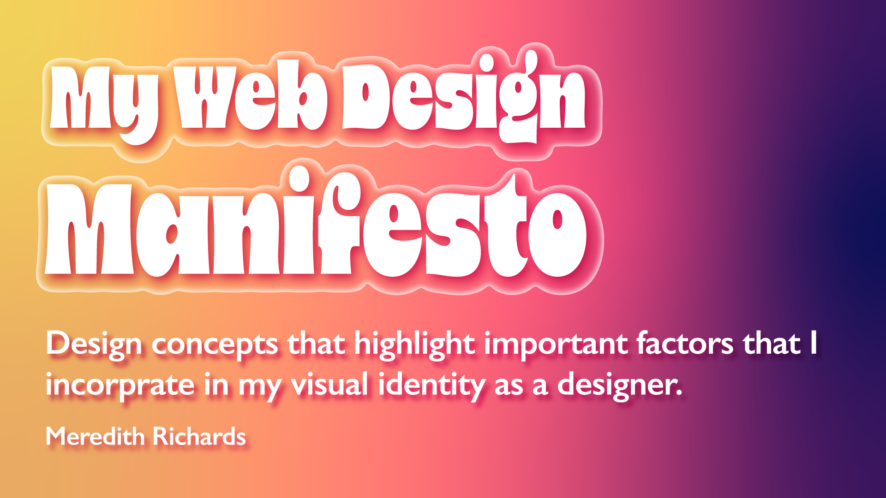
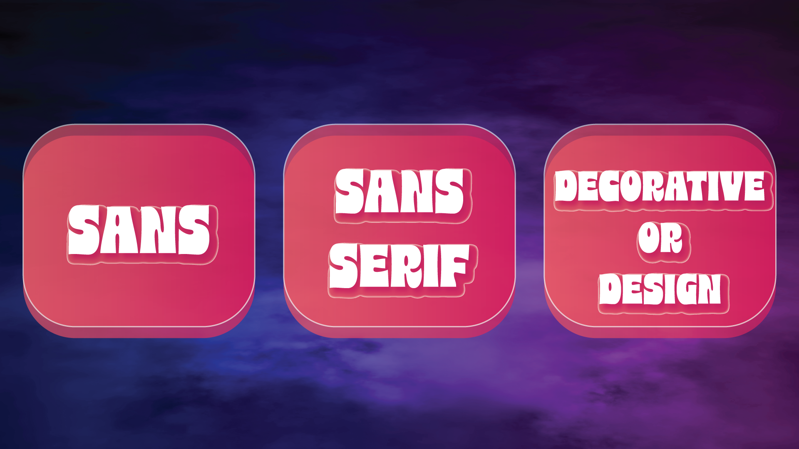
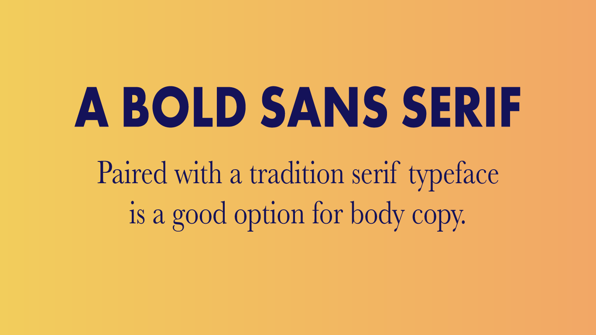
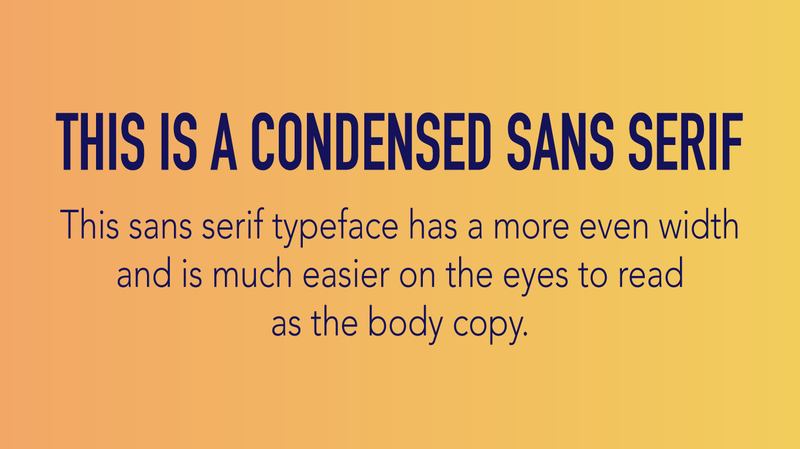
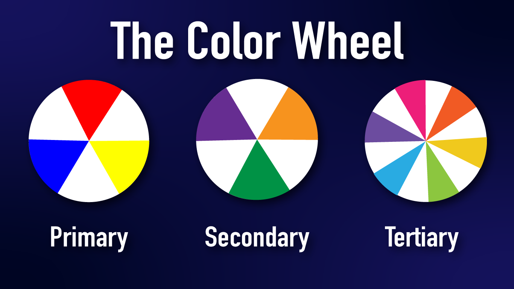
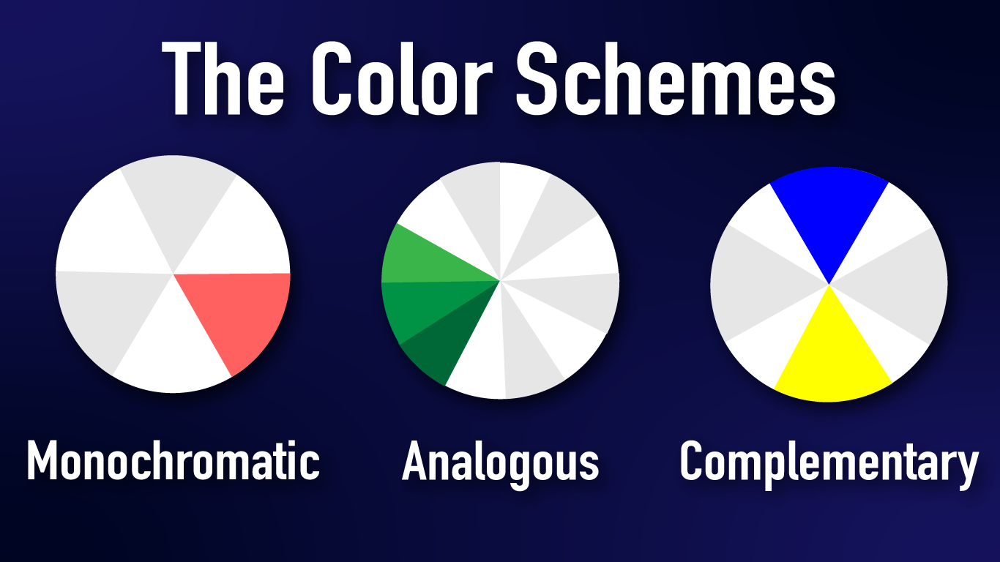

In order to know how to choose fonts, we need to understand the various categories of type, the characteristics of each, and recommended usage. In this guide, we’ll refer to three different categories of type when choosing font pairings.

A serif is a small line or stroke attached to the end of a larger stroke, often referred to as the “feet” shown at the bottom of letters. Not all serifs are equal. Some have slight variations depending on the typeface and that is part of what makes them unique. An advantage of using serif typefaces is how many font weights they usually have within a family. One serif family might have a regular, italics, semi bold, semi bold italic, bold, bold italic, small caps, and more.
Sans serif typefaces do not have serifs (the French word sans, means “without”). These typefaces are more modern, bold, and great for eye-catching headlines. One of the most popular sans serif typefaces is Arial which is a copycat of Helvetica. Our main brand fonts here at Flux are two san serif typefaces.
This category of typeface should be used sparingly, most for titles and headlines. It can range from scripts to monotype, and anything in between. These are a great way to add character to your design but should be avoided for long paragraphs of body copy as they can be difficult to read.
No matter what you are designing, you should have a main font. When it comes to web design, most likely this will be used in your title or headline text. It’s meant to be an accent, to stand out, and influence the mood of your design. It doesn’t really matter what type of font it is, but knowing the first one will help you choose your second.
One of these ways to choose fonts is to choose a pair of opposites. A good example of this is to use a big and bold serif for your headline and a nice traditional serif typeface for the body copy. Take a look at this example, to see this tip in action.

The best way to choose a good secondary font is to make sure it’s dramatically different yet complements the design. You wouldn’t want to choose two serifs that look similar, there is no contrast and in fact, it looks like a design mistake.
Another tip is to think about the width of the typeface and how they complement each other. For example, maybe you want to pair a condensed sans serif typeface with a wider san serif. While they are both the same category of type, they vary in contrast due to their width. Take a look at this example for inspiration.

The best way to choose a good secondary font is to make sure it’s dramatically different yet complements the design. You wouldn’t want to choose two serifs that look similar, there is no contrast and in fact, it looks like a design mistake. Take a look at this example, these are two different serif typefaces but it’s difficult to tell.

Color theory is a practical framework for determining which colors work well together. The principles of color theory revolve around the color wheel, which visually portrays the relationships between different colors. The color wheel contains primary, secondary, and tertiary colors. It can also be divided into warm and cool colors. Familiarizing yourself with the color wheel is the first step to learning how to choose harmonious colors.
A color scheme is a harmonious combination of colors. The three main types of color schemes designers should know about are monochromatic, complementary, and analogous. You could think of these schemes as sort of like templates for choosing colors. Let's look at each one in more detail.

Monochromatic color schemes are based on a single hue ("mono" means one). Hues are primary and secondary colors, like red, yellow, and green. To create a monochromatic color scheme, you'd pick a hue, for instance blue, and use tints, shades, and tones to create a harmonious palette. Monochromatic colors tick the box for visual appeal, but be careful to create enough contrast for legibility.
Analogous color schemes are made of colors that sit next to each other on the color wheel. These color schemes are inherently visually appealing, but as with monochromatic color schemes, be careful to create enough contrast for legibility. A tip for using an analogous color scheme on a website is to pair it with a neutral color like black or white in order to improve readability.
Complementary color schemes consist of colors on opposite ends of the color wheel. For example, red and green or blue and orange. Complementary colors tend to contrast well and are therefore a popular choice for web design. However, the contrast can be striking and should therefore be used intentionally in order to ensure that the colors aren't too distracting.
Whereas color theory is centered on creating harmonious color schemes, color psychology is concerned with the feelings and emotions different colors evoke. Feelings and emotions may sound wishy-washy in a business context, but they actually play a critical role in branding, marketing, and sales. In fact, emotions are at the core of a consumer's decision making process (source).
One way to incorporate color psychology when choosing colors for a website is through consideration of common color meanings. Different colors, both consciously and subconsciously, spark certain feelings. These feelings are largely influenced by cultural contexts, as well as personal experiences. Below are some examples of common color associations:
Color psychology can help inform which colors would best represent your client's brand. It makes sense to use green for a health-centered website because of the color's associations with health, nature, and abundance. However, in creative fields like design, rules are sometimes meant to be broken. Within the right context, an unexpected color scheme could work favorably for a brand. A health brand with a red color scheme would certainly stand out among its green competitors; the trick is to make it stand out in a good way, a skill that takes time and practice to master.